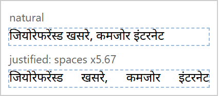
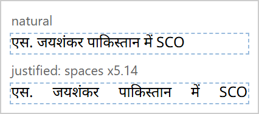
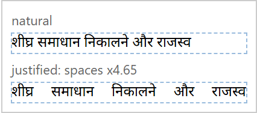
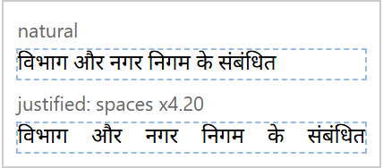
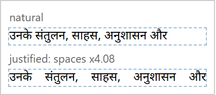

Measured 2026-10-29 with node scripts/gate-review.mjs: real flow.js in headless Chromium, real font (Noto Sans Devanagari),
127 real Janshakti paragraphs. Proposal only: no gate files changed. Column widths are assumed (A3, 12 mm margins, 4 mm gutter);
no real Janshakti grid is written down yet.
Ratio = word space after justifying / normal word space, for every line except a paragraph's last.
| Columns | Body | Column | Lines | Median | 95th pct | 99th pct | Worst | >2x | >3x | >4x |
|---|---|---|---|---|---|---|---|---|---|---|
| 4 | 9 pt | 65.3 mm | 628 | 1.48 | 2.54 | 3.28 | 3.61 | 115 | 8 | 0 |
| 5 | 9 pt | 51.4 mm | 828 | 1.64 | 2.94 | 3.88 | 5.67 | 231 | 39 | 6 |
| 6 | 9 pt | 42.2 mm | 1040 | 1.78 | 4.03 | 5.87 | 9.94 | 404 | 141 | 53 |
| 4 | 10 pt | 65.3 mm | 706 | 1.5 | 2.64 | 3.34 | 3.95 | 142 | 20 | 0 |
| 5 | 10 pt | 51.4 mm | 927 | 1.65 | 3.19 | 4.44 | 6.52 | 305 | 66 | 14 |
| 6 | 10 pt | 42.2 mm | 1165 | 1.82 | 4.09 | 6.11 | 11.54 | 491 | 203 | 67 |
Proposed: on the reference grid (A3, 5 columns, 9 pt) 95th percentile ≤ 3.0 and worst line ≤ 6.0 (today 2.94 and 5.67). Why: it locks today's behaviour so nothing makes it worse, but these numbers are poor by print standards (above about 2x reads as gappy), so the gate should tighten once line breaking looks ahead instead of filling greedily.
At 6 columns (42 mm) justified text is not shippable: 95th percentile 4.03x, worst 9.94x. Narrow columns should default to ragged right.





One A3 page (5 columns, headline, rule, 2 photos, 416 lines, justified) drawn the planned export way (absolute lines, white-space: pre, per-line word-spacing), printed by Chromium, read back with pdf.js.
| Check | Result |
|---|---|
| Lines found in the PDF | 416 of 416 |
| Left edge vs flow() (lines where the first glyph reads back) | max 0.009 pt over 405 lines |
| Baseline: spread of (PDF baseline - flow() line top) | 0 pt (offset 7.695 pt, the same on every line) |
| Right edge of justified lines | 95th pct 0.009 pt, worst 5.264 pt over 339 of 415 lines |
| Fonts embedded | 4 font files for 4 font descriptors |
| Fonts subset | 4 of 4 (AAAAAA+NotoSansDevanagari-Bold, BAAAAA+NotoSansDevanagari-Bold, CAAAAA+NotoSansDevanagari-Regular, DAAAAA+NotoSansDevanagari-Regular) |
| Text that reads back from the PDF exactly | 21 of 416 lines |
Proposed: every checkable line within 0.1 pt of flow() on the left edge and baseline, justified right edges within 0.1 pt at the 95th percentile, and every font embedded and subset. Why: the measured error is 0.01 pt, so 0.1 pt (0.035 mm, far below press registration) only fails on a real bug; the one 5 pt right-edge outlier ends in the conjunct ष्ट and looks like a pdf.js zero-width item (seen on ष्ठ in the headline), not confirmed.
Text read back from the PDF is broken on 395 of 416 lines (Chromium maps many Devanagari glyphs to nothing): search, copy-paste and screen readers on the PDF will not work. The e-paper must not take its text from the PDF.
| Runs | Median | 95th pct | Fastest | Slowest | Lines set |
|---|---|---|---|---|---|
| 20 after 5 warm-up | 8.4 ms | 12.6 ms | 7.2 ms | 12.6 ms | 416 |
Proposed: median ≤ 30 ms for the full page on Amal's laptop. Why: this run gave 8.4 ms and three runs on 2026-10-29 gave medians of 8.4, 12.2 and 19.6 ms, so 30 ms (1.5x the slowest) absorbs machine noise but still catches an algorithmic slowdown; dragging re-flows one story (budget 8 ms per frame), not the whole page.